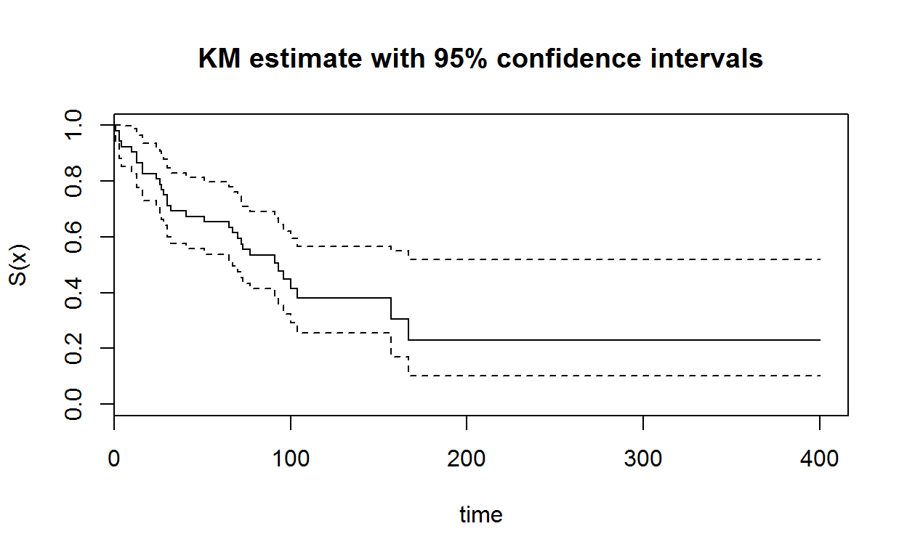
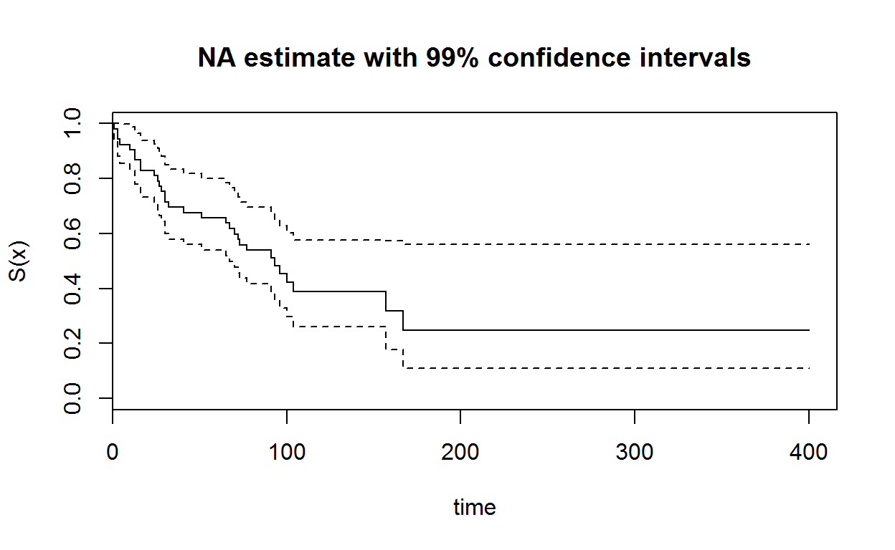

This tutorial discusses the functions that are used for survival analysis in R, including the Kaplan-Meier and Nelson-Aelen estimators, Cox regression models and accelerated failure time models. This tutorial is based on the Survival Analysis in R guide available at OpenIntro (Diez 2013).
It is assumed that the reader has a basic understanding of working in R. For this module, we will need the survival (Therneau 2015) and KMsurv (O. by Klein, Moeschberger, and Jun Yan 2012) packages. Note that both of these packages have been loaded in the current R workspace. Therefore you can utilise the capacities of the package without explicitly loading it.
However, if you are using the packages outside this tutorial remember to first install the packages with the code:
install.packages("survival", dependencies = TRUE)
install.packages("KMsurv", dependencies = TRUE)And then load them with the instruction
library("survival")
library("KMsurv")For the following section, we will need to use the tongue data set. This dataset, which is discussed in detail in J. Klein and Moeschberger (2003 Section 1.11), contains times to death for patients with cancer of the tongue according to two types of tumours. Here the type variable refers to the Tumor DNA profile (where 1 and 2 correspond to Aneuploid Tumor and Diploid Tumor), the time variable records the time to death or on-study time (in weeks), and delta is an indicator for the status of life (where 0 refers to aline and 1 refers to dead).
One can load the data by using the data function.
data(tongue)
head(tongue)attach(tongue)Note the use of the attach function which makes the variables in tongue accessible from the R workspace.
One can create a survival object using the Surv function. This object will be used in the survival functions later.
# create a subset for just the first group by using [type==1]
cens.tongue <- Surv(time[type == 1], delta[type == 1])
cens.tongue## [1] 1 3 3 4 10 13 13 16 16 24 26 27 28 30
## [15] 30 32 41 51 65 67 70 72 73 77 91 93 96 100
## [29] 104 157 167 61+ 74+ 79+ 80+ 81+ 87+ 87+ 88+ 89+ 93+ 97+
## [43] 101+ 104+ 108+ 109+ 120+ 131+ 150+ 231+ 240+ 400+The tongue data correspond to right-censored data. Note that the cens.tongue object will denote censored observations by +. The survival package also supports left-truncated right-censored data.
We want to estimate the Kaplan-Meier estimate. This is done using the survfit function. The conf.int argument is the confidence interval level while the conf.type is the transformation used to construct the confidence interval. By default, this latter argument is set to log, which is \(g(t) = \log(t)\).
fit1 <- survfit(cens.tongue ~ 1, conf.int = 0.95, conf.type = "log")
summary(fit1)## Call: survfit(formula = cens.tongue ~ 1, conf.int = 0.95, conf.type = "log")
##
## time n.risk n.event survival std.err lower 95% CI upper 95% CI
## 1 52 1 0.981 0.0190 0.944 1.000
## 3 51 2 0.942 0.0323 0.881 1.000
## 4 49 1 0.923 0.0370 0.853 0.998
## 10 48 1 0.904 0.0409 0.827 0.988
## 13 47 2 0.865 0.0473 0.777 0.963
## 16 45 2 0.827 0.0525 0.730 0.936
## 24 43 1 0.808 0.0547 0.707 0.922
## 26 42 1 0.788 0.0566 0.685 0.908
## 27 41 1 0.769 0.0584 0.663 0.893
## 28 40 1 0.750 0.0600 0.641 0.877
## 30 39 2 0.712 0.0628 0.598 0.846
## 32 37 1 0.692 0.0640 0.578 0.830
## 41 36 1 0.673 0.0651 0.557 0.813
## 51 35 1 0.654 0.0660 0.537 0.797
## 65 33 1 0.634 0.0669 0.516 0.780
## 67 32 1 0.614 0.0677 0.495 0.762
## 70 31 1 0.594 0.0683 0.475 0.745
## 72 30 1 0.575 0.0689 0.454 0.727
## 73 29 1 0.555 0.0693 0.434 0.709
## 77 27 1 0.534 0.0697 0.414 0.690
## 91 19 1 0.506 0.0715 0.384 0.667
## 93 18 1 0.478 0.0728 0.355 0.644
## 96 16 1 0.448 0.0741 0.324 0.620
## 100 14 1 0.416 0.0754 0.292 0.594
## 104 12 1 0.381 0.0767 0.257 0.566
## 157 5 1 0.305 0.0918 0.169 0.550
## 167 4 1 0.229 0.0954 0.101 0.518The Kaplan-Meier estimate can be plotted using plot(fit1):
plot(fit1, main = "KM estimate with 95% confidence intervals", xlab = "time",
ylab = "S(x)")
alloauto data set with 99% confidence interval. Note the alloauto data includes the following three variables# load and attach the data
data(alloauto)
attach(alloauto)
# create the surival object for the second group
cens.alloauto <- Surv(time[type == 2], delta[type == 2])
# fit the survival curve
# print out the results
# plot the curve with confidence intervals# load and attach the data
data(alloauto)
attach(alloauto)
# create the surival object for the second group
cens.alloauto <- Surv(time[type == 2], delta[type == 2])
# fit the survival curve
fit2 <- survfit(cens.alloauto ~ 1, conf.int = 0.99, conf.type = "log")
# print out the results
summary(fit2)
# plot the curve with confidence intervals
plot(fit2, main = "KM estimate with 99% confidence intervals", xlab = "time",
ylab = "S(x)")We can also use the survfit function to calculate the Nelson-Aalen estimator. This is done by setting the type argument to "fh" (here "fh" stands for Fleming-Harrington which is an alternative name used in some textbooks for the Nelson-Aaelen estimators) as shown below.
fit2 <- survfit(cens.tongue ~ 1, conf.int = 0.95, type = "fh")
summary(fit2)## Call: survfit(formula = cens.tongue ~ 1, conf.int = 0.95, type = "fh")
##
## time n.risk n.event survival std.err lower 95% CI upper 95% CI
## 1 52 1 0.981 0.0190 0.944 1.000
## 3 51 2 0.943 0.0324 0.882 1.000
## 4 49 1 0.924 0.0370 0.854 0.999
## 10 48 1 0.905 0.0409 0.828 0.989
## 13 47 2 0.867 0.0474 0.779 0.965
## 16 45 2 0.829 0.0526 0.732 0.938
## 24 43 1 0.810 0.0548 0.709 0.924
## 26 42 1 0.790 0.0568 0.687 0.910
## 27 41 1 0.771 0.0586 0.665 0.895
## 28 40 1 0.752 0.0602 0.643 0.880
## 30 39 2 0.714 0.0631 0.601 0.849
## 32 37 1 0.695 0.0643 0.580 0.833
## 41 36 1 0.676 0.0654 0.560 0.817
## 51 35 1 0.657 0.0663 0.539 0.801
## 65 33 1 0.638 0.0673 0.518 0.784
## 67 32 1 0.618 0.0681 0.498 0.767
## 70 31 1 0.598 0.0688 0.478 0.749
## 72 30 1 0.579 0.0693 0.458 0.732
## 73 29 1 0.559 0.0698 0.438 0.714
## 77 27 1 0.539 0.0703 0.417 0.696
## 91 19 1 0.511 0.0722 0.388 0.674
## 93 18 1 0.484 0.0737 0.359 0.652
## 96 16 1 0.454 0.0752 0.328 0.628
## 100 14 1 0.423 0.0767 0.296 0.603
## 104 12 1 0.389 0.0783 0.262 0.577
## 157 5 1 0.319 0.0958 0.177 0.574
## 167 4 1 0.248 0.1034 0.110 0.562plot(fit2, main = "NA estimate with 99% confidence intervals", xlab = "time",
ylab = "S(x)")
The comparison of the Kaplan Meier and Nelson-Aalen estimators is shown below.
plot(fit1, main = "KM v.s. NA estimates", xlab = "time", ylab = "S(x)", col = "blue")
lines(fit2, col = "red")
legend("topright", c("KM", "NA"), col = c("blue", "red"), lty = 1)In order to conduct Log-rank and Wilcoxon tests for the difference between two survival curves, you will need to use the survdiff function. Setting the argument rho equal to zero will specify a Log-rank test.
For instance. we can apply the Log-rank test to test if the survival times for the two types of tumours in the tongue dataset are the same:
G2 <- Surv(time, delta)
logrank <- survdiff(G2 ~ type, rho = 0)
logrank ## Call:
## survdiff(formula = G2 ~ type, rho = 0)
##
## N Observed Expected (O-E)^2/E (O-E)^2/V
## type=1 52 31 36.6 0.843 2.79
## type=2 28 22 16.4 1.873 2.79
##
## Chisq= 2.8 on 1 degrees of freedom, p= 0.0949Alternatively, setting the rho argument to 1 will specify the Wilcoxon test:
Wilcoxon <- survdiff(G2 ~ type, rho = 1)
Wilcoxon ## Call:
## survdiff(formula = G2 ~ type, rho = 1)
##
## N Observed Expected (O-E)^2/E (O-E)^2/V
## type=1 52 20.2 24.4 0.731 3.3
## type=2 28 15.1 10.9 1.643 3.3
##
## Chisq= 3.3 on 1 degrees of freedom, p= 0.0694detach(tongue)The output of survdiff is generally self-explanatory. A \(\chi^2\) statistic is computed along with a p-value. In this particular case, we cannot reject the hypothesis that both type of tumours have the same survival time.
alloauto data are the same.# load and attach the data
data(alloauto)
attach(alloauto)
# create the survival object
# perform the log-rank test# load and attach the data
data(alloauto)
attach(alloauto)
# create the survival object
alloauto <- Surv(time, delta)
# perform the log-rank test
lr_alloauto<- survdiff(alloauto ~ type, rho = 0)
lr_alloauto alloauto data are the same.# load and attach the data
data(alloauto)
attach(alloauto)
# create the survival object
# perform the Wilcoxon test# load and attach the data
data(alloauto)
attach(alloauto)
# create the survival object
alloauto <- Surv(time, delta)
# perform the Wilcoxon test
wn_alloauto <- survdiff(alloauto ~ type, rho = 1)
wn_alloauto For the following examples, we will be using the larynx dataset. This dataset, which is discussed in detail in J. Klein and Moeschberger (2003 Section 1.8), contains times to death for male patients with laryngeal cancer. Note the data frame contains the following columns (see the R help file):
stage: Stage of disease (1=stage 1, 2=stage2, 3=stage 3, 4=stage 4)
time: Time to death or on-study time, months
age: Age at diagnosis of larynx cancer
diagyr: Year of diagnosis of larynx cancer
delta: Death indicator (0=alive, 1=dead)
We first conduct a similar procedure as in the case of fitting the KM/NA estimators and create a survival object from the data.
data(larynx)
head(larynx)attach(larynx)
cens.larynx <- Surv(time,delta)
cens.larynx## [1] 0.6 1.3 2.4 2.5+ 3.2 3.2+ 3.3 3.3+ 3.5 3.5 4.0
## [12] 4.0 4.3 4.5+ 4.5+ 5.3 5.5+ 5.9+ 5.9+ 6.0 6.1+ 6.2+
## [23] 6.4 6.5 6.5+ 6.7+ 7.0+ 7.4 7.4+ 8.1+ 8.1+ 9.6+ 10.7+
## [34] 0.2 1.8 2.0 2.2+ 2.6+ 3.3+ 3.6 3.6+ 4.0 4.3+ 4.3+
## [45] 5.0+ 6.2 7.0 7.5+ 7.6+ 9.3+ 0.3 0.3 0.5 0.7 0.8
## [56] 1.0 1.3 1.6 1.8 1.9 1.9 3.2 3.5 3.7+ 4.5+ 4.8+
## [67] 4.8+ 5.0 5.0+ 5.1+ 6.3 6.4 6.5+ 7.8 8.0+ 9.3+ 10.1+
## [78] 0.1 0.3 0.4 0.8 0.8 1.0 1.5 2.0 2.3 2.9+ 3.6
## [89] 3.8 4.3+The Cox PH model can be fitted using the coxph function, with the argument method specifying the estimation procedure to be used. Note the use of the as.factor function to allow each of the different values of the variable “stage” to be treated separately in the regression. We can also obtain the baseline hazard function using the basehaz function. This is demonstrated below.
Cox.Reg <- coxph(cens.larynx ~ as.factor(stage) + age, method = "breslow")
summary(Cox.Reg)## Call:
## coxph(formula = cens.larynx ~ as.factor(stage) + age, method = "breslow")
##
## n= 90, number of events= 50
##
## coef exp(coef) se(coef) z Pr(>|z|)
## as.factor(stage)2 0.13856 1.14862 0.46231 0.300 0.764
## as.factor(stage)3 0.63835 1.89335 0.35608 1.793 0.073 .
## as.factor(stage)4 1.69306 5.43607 0.42221 4.010 6.07e-05 ***
## age 0.01890 1.01908 0.01425 1.326 0.185
## ---
## Signif. codes: 0 '***' 0.001 '**' 0.01 '*' 0.05 '.' 0.1 ' ' 1
##
## exp(coef) exp(-coef) lower .95 upper .95
## as.factor(stage)2 1.149 0.8706 0.4642 2.842
## as.factor(stage)3 1.893 0.5282 0.9422 3.805
## as.factor(stage)4 5.436 0.1840 2.3763 12.436
## age 1.019 0.9813 0.9910 1.048
##
## Concordance= 0.682 (se = 0.045 )
## Rsquare= 0.182 (max possible= 0.988 )
## Likelihood ratio test= 18.07 on 4 df, p=0.001197
## Wald test = 20.82 on 4 df, p=0.0003443
## Score (logrank) test = 24.33 on 4 df, p=6.867e-05We can also obtain the baseline hazard function using the basehaz function. This is demonstrated below.
Base.H <- basehaz(Cox.Reg, centered = FALSE)
plot(Base.H$time, Base.H$hazard, xlab = "t", ylab = "H_0(t)",
main = "Baseline Hazard Rate", type = "s")Based on the output of the previous Cox regression, answer the following questions.
Finally, we can fit in a similar manner the appropriate AFT model by specifying the distribution in the dist argument of the survreg function. We demonstrate the use of this function below for a Weibull AFT model.
Weib.Reg <- survreg(cens.larynx ~ as.factor(stage) + age, dist = 'weibull')
summary(Weib.Reg)##
## Call:
## survreg(formula = cens.larynx ~ as.factor(stage) + age, dist = "weibull")
## Value Std. Error z p
## (Intercept) 3.5288 0.9041 3.903 9.50e-05
## as.factor(stage)2 -0.1477 0.4076 -0.362 7.17e-01
## as.factor(stage)3 -0.5866 0.3199 -1.833 6.68e-02
## as.factor(stage)4 -1.5441 0.3633 -4.251 2.13e-05
## age -0.0175 0.0128 -1.367 1.72e-01
## Log(scale) -0.1223 0.1225 -0.999 3.18e-01
##
## Scale= 0.885
##
## Weibull distribution
## Loglik(model)= -141.4 Loglik(intercept only)= -151.1
## Chisq= 19.37 on 4 degrees of freedom, p= 0.00066
## Number of Newton-Raphson Iterations: 5
## n= 90In the output, (Intercept) and Log(scale) correspond to estimates of \(\mu\) and \(\log \sigma\).
Apply the Weibull AFT model to the alloauto dataset with the covariate type (as a factor)
# load and attach the data
data(alloauto)
attach(alloauto)
# create the surival object
alloauto <- Surv(time,delta)
# apply the Weibull AFT model# load and attach the data
data(alloauto)
attach(alloauto)
# create the surival object
alloauto <- Surv(time,delta)
# apply the Weibull AFT model
Weib.alloauto <- survreg(alloauto ~ as.factor(type), dist = 'weibull')
summary(Weib.alloauto)Diez, David M. 2013. “Survival Analysis in R.” June. https://www.openintro.org/stat/surv.php.
Klein, Original by, Moeschberger, and modifications by Jun Yan. 2012. KMsurv: Data Sets from Klein and Moeschberger (1997), Survival Analysis. https://CRAN.R-project.org/package=KMsurv.
Klein, J.P., and M.L. Moeschberger. 2003. Survival Analysis: Techniques for Censored and Truncated Data. Statistics for Biology and Health. Springer New York.
Therneau, Terry M. 2015. A Package for Survival Analysis in S. https://CRAN.R-project.org/package=survival.